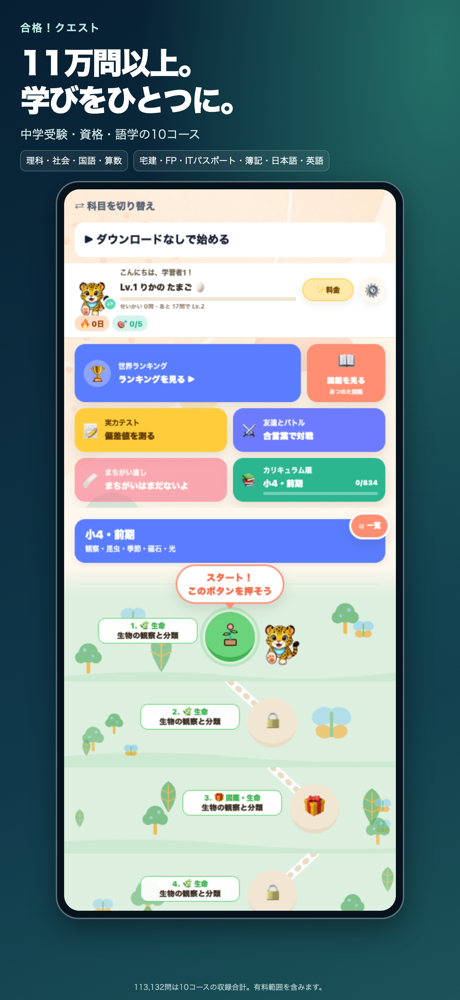
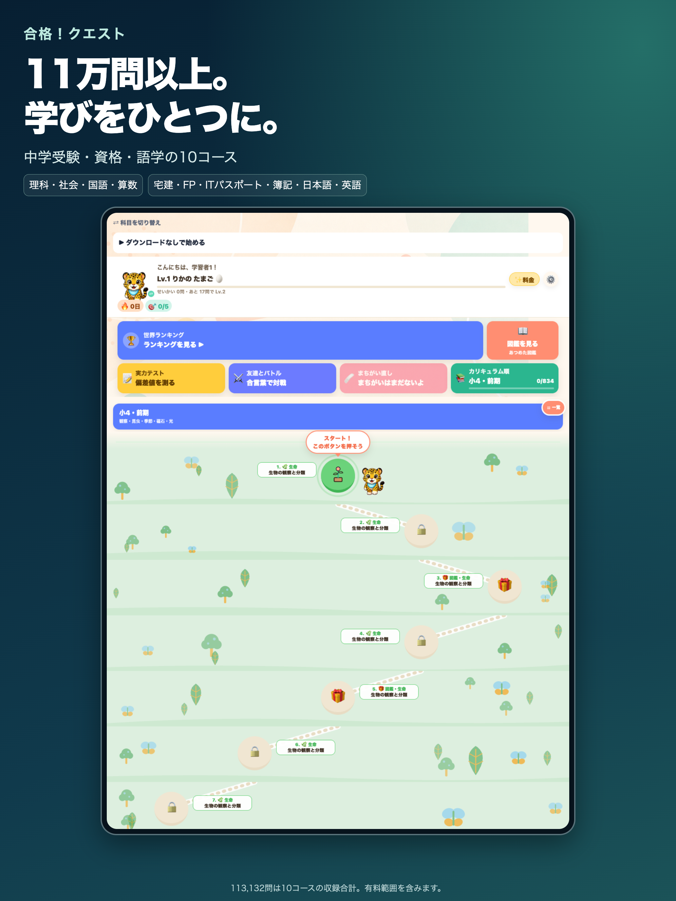

中学受験4科
- 理科
- 社会
- 国語
- 算数
単元ごとのクイズと解説で、小学生の家庭学習や中学受験の復習を支援します。
中学受験・資格・語学の総合学習アプリ
理科・社会・国語・算数、宅建・FP・ITパスポート・簿記、日本語・英語。10コースの問題演習と解説を1つのアプリに。
次期バージョン1.2.0の提供内容をご紹介しています。現在は公開準備中です。
App Storeで掲載状況を確認単元ごとのクイズと解説で、小学生の家庭学習や中学受験の復習を支援します。
資格に関する知識を、問題演習と解説で繰り返し確認できます。
目的に合うコースを選んで学習できます。
今後も学習コースを追加予定です。追加内容・提供時期は決まり次第ご案内します。
収録問題は10コース合計113,132問。全10コースの図鑑をイラストで学び、対応問題では音声も活用できます。問題数とページ数は2026年9月27日時点の収録合計で、無料・有料範囲を含みます。
正答数・偏差値・連続学習のランキングを科目別に用意。自分の記録を確かめながら学習を続けられます。参加は任意です。全順位を連続スクロールで閲覧でき、300位ごとの画面切り替えはありません。
複数プロフィールで家族ごとの学習記録を管理できます。図鑑・音声などの対応範囲はコース・教材・プランにより異なります。


各コースに無料で試せる範囲があります。Proは1科目・中学受験4科・全科目の月額／年額プランを用意。価格、期間、対象コースは購入画面をご確認ください。全科目は現在提供中の対象コースを指します。今後の追加コースの利用条件は追加時にご案内します。
サブスクリプションは自動更新されます。管理・解約はApp Storeのアカウント設定で行えます。無料範囲では広告が表示される場合があり、Pro利用中は広告を表示しません。
全10コースに世界ランキングを用意しています。正答数・偏差値・連続学習の順位を科目別・プロフィール別に確認できます。300位ごとに画面を切り替えず、スクロールしてすべての順位を続けて閲覧できます。参加は任意で設定から選べます。閲覧には通信が必要です。
次期バージョン1.2.0の提供対象は、理科・社会・国語・算数、宅建士・FP技能検定・ITパスポート・簿記、日本語・英語の10コースです。今後も学習コースを追加予定です。追加内容と時期は決まり次第ご案内します。
生活日本語、JLPT N5〜N1、JFT-Basicの学習トラックを用意しています。試験実施団体の公式アプリではありません。
各コースに無料で試せる範囲があります。有料のProプランは1科目・中学受験4科・全科目に月額と年額を用意。最新の対象コース・価格・期間はアプリの購入画面をご確認ください。今後の追加コースの利用条件は追加時にご案内します。
図鑑は全10コースに合計4,714ページ収録しています。イラストで関連知識を確認できます。音声は対応問題で利用でき、教材によって対応範囲が異なります。
複数プロフィールに対応しています。家族それぞれの学習履歴や正答率を分けて管理できます。
iPhoneとiPadに対応する学習アプリです。次期バージョン1.2.0の公開状況はApp Storeでご確認ください。